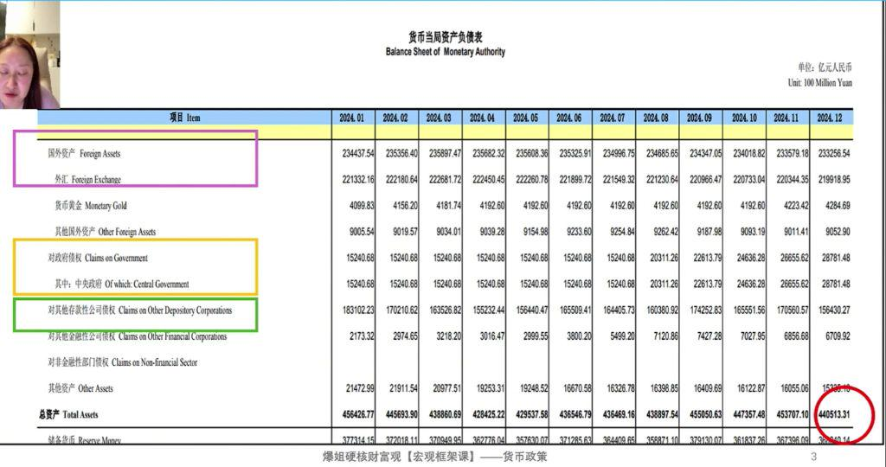
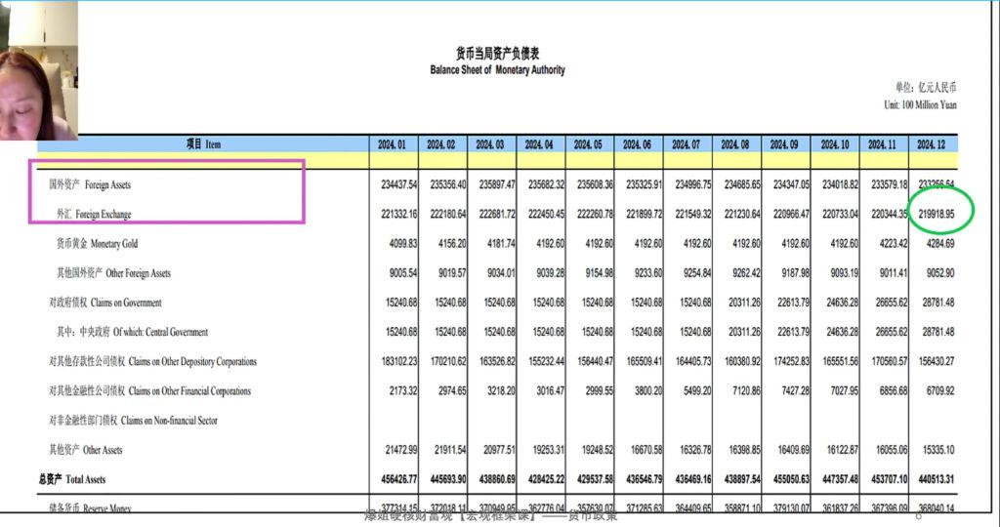
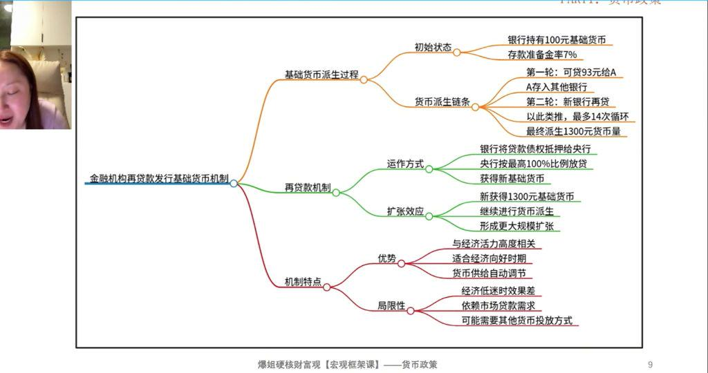
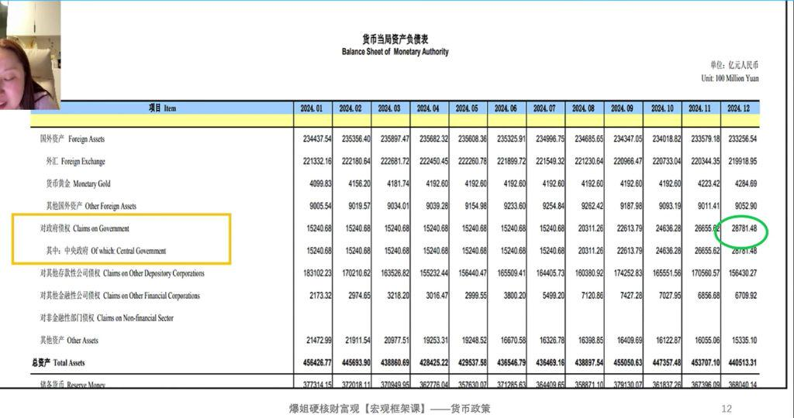
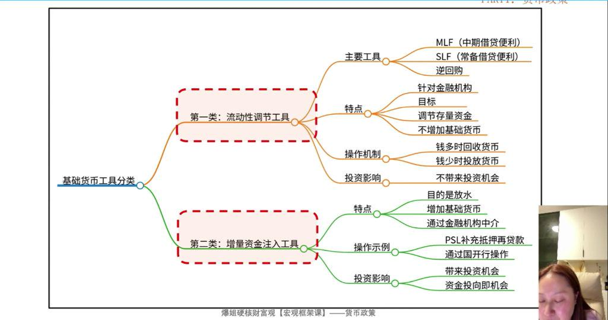
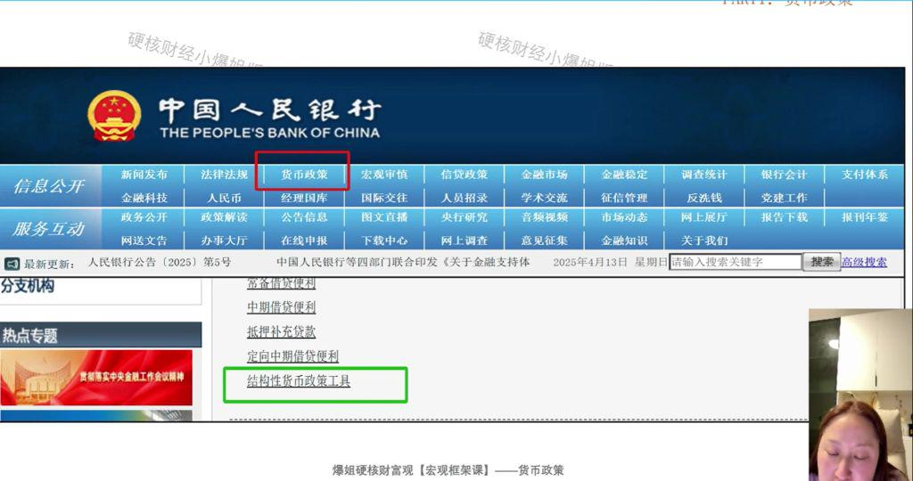
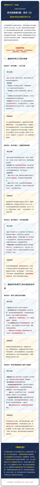

上节课我们知道了基础货币是央行直接发行的"源头之水"。这节课我们深入拆解：央行到底通过什么渠道发行基础货币？
主要有三大渠道：外汇占款、金融机构再贷款、购买国债。
核心数据：2024年末央行总资产约 44万亿，≈ 实际发行的全部基础货币总量。

实践运用：外汇占款模式的致命缺陷在于，基础货币的发行高度依赖外部环境。一旦出口受阻或外资流出，即使国内经济自身需要流动性支持，央行也无法通过此渠道投放货币，容易导致经济与货币供给的错配。任何博主用"外汇储备/M2"来论证人民币超发，都是犯了将"源头之水"（基础货币）与"派生之水"（M2）混淆的常识性错误。

当前规模：2024年末约 15.6万亿，占央行总资产约35%，是第二大发行来源。
实践运用：理解其顺周期的特性，就能明白为何在经济下行压力大时，央行单纯依靠降息等传统工具效果有限，因为"马（企业）不愿到河边喝水（贷款）"，货币传导的第一个环节就已中断。

实践运用：央行购买国债是最直接、最有效的放水方式。任何关于中国开始"无锚印钞"的言论都是夸大其词，忽视了其极低占比的现实。但正因其高效，一旦央行开始在二级市场连续、规模性地购买国债，这便是最强级别的宽松信号，对资产价格的提振作用也最大。
| 发行方式 | 当前规模 | 占比 | 特点 |
|---|---|---|---|
| 外汇占款 | ~22万亿 | ~50% | 被动，依赖外部环境 |
| 金融机构再贷款 | ~15.6万亿 | ~35% | 顺周期，经济差时放不出去 |
| 购买国债 | ~2.8万亿 | ~6% | 主动，最强放水信号 |
央行的货币工具可分为两大类：

实践运用：投资者必须学会甄别这两类工具。当新闻中出现MLF、逆回购等操作时，应理解为央行在进行日常的"流动性管理"，对资产价格影响有限。而当出现新型结构性再贷款工具，或央行开始购买国债时，才是需要高度关注的"放水"信号。

实践运用：分析结构性货币工具时，不能只看名称和规模，必须穿透到资金的最终用途。只有那些直接注入买盘、创造需求的工具，才是真正能带来确定性投资机会的"王炸"级政策。央行资产负债表（月更）和结构性工具表（季更）的交叉验证，是专业投资者进行宏观择时的必备功课。
本节课系统梳理了央行发行基础货币的三大渠道及其演变，明确了"外汇占款"的被动性、"金融机构再贷款"的顺周期性，以及"购买国债"的主动性和高效性。
更重要的是，我们建立了一套识别货币政策"含金量"的实战框架：
1. 首先，区分"调节流动性"和"注入增量资金"两类工具，将注意力聚焦于后者；
2. 其次，在"注入增量资金"的工具中，通过分析资金的最终用途，进一步甄别其是"直接作用于资产"还是"间接作用于经营"。
掌握这套层层递进的分析方法，我们就能穿透政策迷雾，在央行行动时，第一时间判断其对资产价格的真实影响，从而抓住由"水"驱动的核心投资机会。
